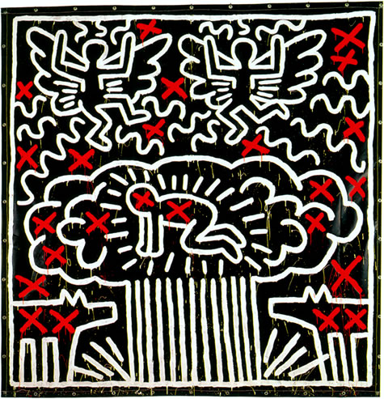
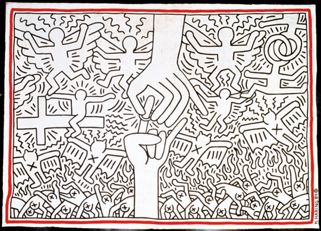
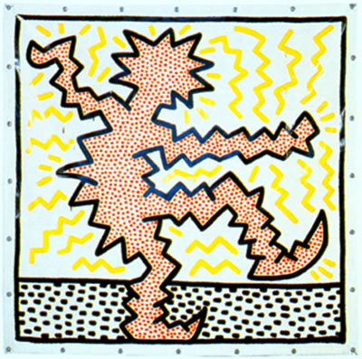

Favorite Works by Keith Haring
1. Untitled (Nuclear Cloud and Radiant Baby)

A black vinyl painting featuring a radiant infant glowing at the center of a mushroom cloud column, flanked by barking dogs, winged figures, and marked throughout with dripping red crosses that create contrast.
Why I chose it: I find it seeks to represent the struggles of innocent life directly inside an explosive, catastrophic cloud during the height of the Cold War, meaning most of the people that actually end up paying for geopolitical catastrohpies are innocent civilians.
2. The Marriage between Heaven and Hell (1984)

A dense painting dominated by two central hands one placing a wedding ring, on the other surrounded by a dramatic battleground of religious crosses, soaring angels, winged demons, and suffering figures along the lower edge.
Why I chose it: In my opinion it seeks to criticize and examine the institution of marriage itself, combining love, spiritual conflict, tension and passion turning a simple ritual of commitment into a social reflection.
3. Untitled (Electric Man)

A dynamic figure, defined by zigzag lightning contours filled with red polka-dots, dancing above a dotted ground plane against a field of radiant yellow energy bolts and bold framing lines.
Why I chose it: I think that more than a reflection or social critic, this painting is revolutionaty for Harings stated artstyle. It breaks with the soft clean straight edges while mantaining the rythmic movements, bold colors and iconic poses. It perfectly captures a body electrified by sound and motion.